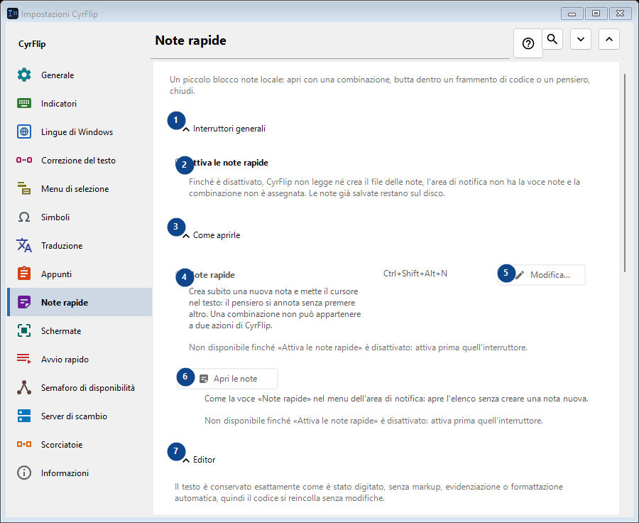
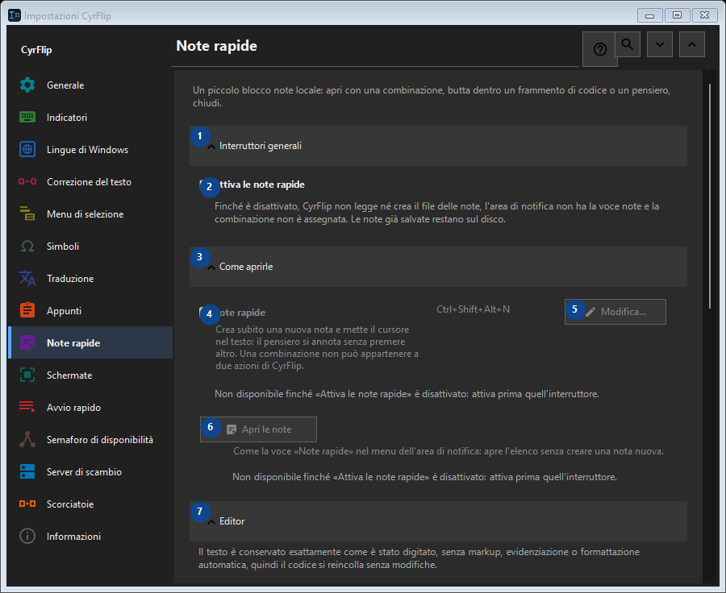

Note rapide
A cosa serve
Un piccolo blocco note locale: apri con una combinazione, butta dentro un frammento di codice o un pensiero, chiudi.


Ordine delle operazioni
Le impostazioni si applicano subito. Non serve un ordine preciso; usa i gruppi qui sotto.
Elementi
1. Interruttori generali
Usa questo comando per l’azione indicata. Leggi ogni richiesta di conferma prima di accettare.
Le tue scorciatoie2. Attiva le note rapide
Finché è disattivato, CyrFlip non legge né crea il file delle note, l'area di notifica non ha la voce note e la combinazione non è assegnata. Le note già salvate restano sul disco.
Le tue scorciatoie3. Come aprirle
Usa questo comando per l’azione indicata. Leggi ogni richiesta di conferma prima di accettare.
Le tue scorciatoie4. Note rapide
Non disponibile finché «Attiva le note rapide» è disattivato: attiva prima quell'interruttore. Questo elemento non è disponibile. Attiva prima la funzione o seleziona una voce.
Le tue scorciatoie5. Modifica - Note rapide
Non disponibile finché «Attiva le note rapide» è disattivato: attiva prima quell'interruttore. Questo elemento non è disponibile. Attiva prima la funzione o seleziona una voce.
Le tue scorciatoie6. Apri le note
Non disponibile finché «Attiva le note rapide» è disattivato: attiva prima quell'interruttore. Questo elemento non è disponibile. Attiva prima la funzione o seleziona una voce.
Le tue scorciatoie7. Editor
Usa questo comando per l’azione indicata. Leggi ogni richiesta di conferma prima di accettare.
Le tue scorciatoie8. Manda a capo le righe lunghe nell'editor
Non disponibile finché «Attiva le note rapide» è disattivato: attiva prima quell'interruttore. Questo elemento non è disponibile. Attiva prima la funzione o seleziona una voce.
Le tue scorciatoie9. Esportazione e archiviazione
Usa questo comando per l’azione indicata. Leggi ogni richiesta di conferma prima di accettare.
Le tue scorciatoie10. Aggiungi le date all'esportazione
Non disponibile finché «Attiva le note rapide» è disattivato: attiva prima quell'interruttore. Questo elemento non è disponibile. Attiva prima la funzione o seleziona una voce.
Le tue scorciatoie11. Esporta tutte le note in Markdown...
Non disponibile finché «Attiva le note rapide» è disattivato: attiva prima quell'interruttore. Questo elemento non è disponibile. Attiva prima la funzione o seleziona una voce.
Le tue scorciatoie12. Elimina tutte le note rapide
Non disponibile finché «Attiva le note rapide» è disattivato: attiva prima quell'interruttore. Questo elemento non è disponibile. Attiva prima la funzione o seleziona una voce.
Le tue scorciatoie13. Trasferimento su un altro computer
Usa questo comando per l’azione indicata. Leggi ogni richiesta di conferma prima di accettare.
Le tue scorciatoie14. Esporta...
Un unico file di testo in chiaro con le note e la cronologia appunti scelta: si legge in qualsiasi editor o sul telefono e si importa in CyrFlip su un altro computer. Il file non è cifrato. L'importazione mostra cosa verrà aggiunto e non elimina nulla.
Le tue scorciatoie15. Importa...
Usa questo comando per l’azione indicata. Leggi ogni richiesta di conferma prima di accettare.
Le tue scorciatoie